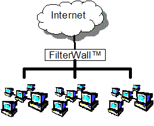
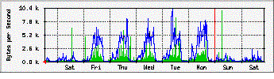

FeaturesSpecsFAQHistory
FeaturesSpecsFAQHistoryFeatures
- Content Filtering
The FilterWall offers an advanced filtering system that uses a combination of content lists[1], dynamic pattern matching, and the "SMART"[2] algorithm. FilterWall provides flexible mechanisms for tailoring content filtration to fit each organization's acceptable use policy. FilterWall supports both whitelisting and blacklisting filtration strategies, and allows default lists to be customized by administrators. Lists are organized into 25 different categories according to site content, which allows administrators to set policies for each category individually. In addition to the basic "block" and "allow" policies, FilterWall offers the "advise" policy. The "advise" policy presents a web page warning that the requested url may violate the acceptable use policy, but provides a link that allows the user to use their own judgment on whether to proceed to the requested url. Access violations are logged with username, computer, category and other useful information to help track the problems.
[1] - DMOZ Content List
[2] - SMART (Search Modification And Removal Technology)
- Security
With the popularization of broadband Internet, the number of computer break-in attempts and viruses has increased dramatically; the FilterWall reduces the risk by including a stateful inspection firewall that can restrict and audit traffic.
- DMZ
The DMZ (De-Militarized Zone) provided on some models allow you to add extra security for servers which must be publicly accessible. This allows tight security to be maintained on the internal network, by not letting the outside world initiate connections to the internal network. Connections to servers inside the DMZ are restricted by port number allowing only intended services through.
- Transparency
FilterWall allows for transparent proxying. This means that no special configuration is required when a computer is attached to the school network to take advantage of the FilterWall features. With a FilterWall, you can just plug in a new computer and it will automatically be filtered. Optionally the FilterWall can be router transparent allowing for simple integration to an existing network without reconfiguration of router equipment or client gateways. The FilterWall transparently passes traffic through to the neighboring router.

- Web Caching
The Filterwall web cache improves internet access by decreasing the load on connections to the internet, which are lower speed then internal networks and can easily become congested. In lab situations where the entire lab visits the same web site, the content for the site would only be downloaded once and then shared to the local clients increasing network performance. Accurate cache expiration rules ensure that FilterWall users will never see out-of-date pages when using the cache feature.
- Network Services
The FilterWall is capable Network Address Translation (NAT) and Port Address Translation (PAT). This allows all the network computers to be assigned a private IP address saving the cost of buying large public IP ranges. FilterWall also provides a DHCP server to assign all the IP addresses on the network.

- Web management
FilterWall is configured and managed through a user-friendly, web-based system. It allows a system administrator in real-time to monitor internet traffic, modify the filter rules, and review access violations.
- Complete Package
The FilterWall is a fully integrated system. It does not require the purchase of additional hardware or software to take full advantage of all FilterWall features; it is not dependent on the proper configuration of any third-party software. One system is enough to cover an entire school -- just plug it in and go.
- Maintenance contract
A maintenance contract makes sure that the FilterWall stays current with the latest features and content filters. This service also includes time with VCT representatives who can assist you with "custom" filters or take requests for new features for the next FilterWall release.